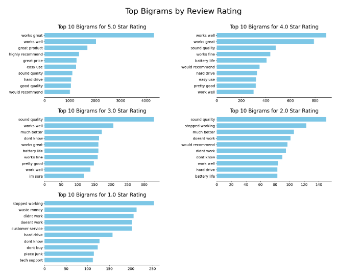
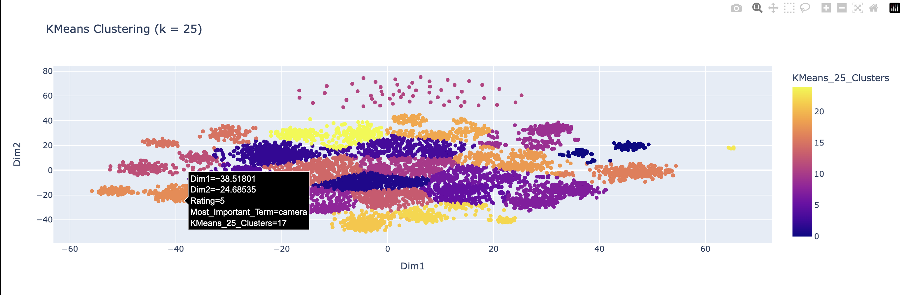
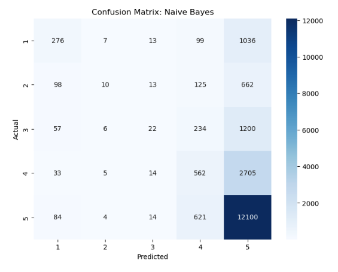
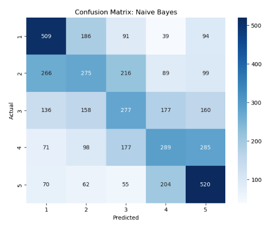

Exploring and Modeling Amazon Electronics Reviews
Introduction
Every product review holds a story. These stories may span paragraphs of in-depth detail about the user’s experience, or offer a simple “works great!” In either case, the user felt compelled to offer their own perspective, creating a snapshot of their interaction with the product. These stories, delivered from countless different voices and tones, hold a treasure trove of information. They reveal customer satisfaction and provide clues on why certain products do well - or where they fall short. By analyzing these reviews, we can uncover trends that exist beyond individual opinions.
In this study, I leverage natural language processing techniques and machine learning models to explore the hidden structure of Amazon customer reviews. For the data, I gathered over 6 million individual reviews from an open-source GitHub repository. Due to computational bottlenecks, I conducted my analysis using 100,000 randomly sampled reviews from the main data set.
As for the project goals, I first wanted to analyze which key terms appeared most frequently across different Amazon review ratings (on a 5-star scale). Next, I used a technique called clustering, which allowed me to extract the underlying patterns in the review text. For the final part of the project, I shifted my focus to predicting three different metrics associated with Amazon reviews.
Data
Before diving into the main parts of this study, I’d like to provide you with a quick summary of my data. All of the Amazon reviews used in this study come from the source linked above. The creator of the GitHub repository, Jianmo Ni, is a former UCSD student who created the repository to store over 200 million Amazon reviews to be used for their paper on recommendation systems.1 The raw data came in the form of JSON, which structures data in human-readable form by using key-value pairs.
Here is an example of a review in JSON:

Source
In the data cleaning section of this website, I cover the steps taken to convert this data into a tabular format - similar to what you see in an excel sheet where each observation is a row, and each column represents a different variable or characteristic.
Exploring the data
Rating Skewness
To better understand the data, I began by looking at the different characteristics associated with reviews. A natural first step was to look at the frequency of different review ratings. “Rating” in this case refers to the score a user gives to a product - ranging from 1 to 5 stars. Most of the ratings for electronics were 5 stars, which ended up causing some issues down the line when I attempted to predict the rating of different reviews.
Patterns in Text
In the next part of my exploration, I shifted my focus to the review text itself. For this, I relied on a tool called a “document term matrix” that takes in raw text as an input, and returns a table where each row was a review, and each column represented a word found across all of our reviews. From there, I sorted the top 10 most frequently occurring words for each review rating and plotted them on different bar graphs. When using only single terms, the results were uninformative, with meaningless words occupying the top spots across all review ratings. To try and correct this, I instead looked at the top word pairs for each review rating, which gave much better results:
Top Word Pairs by Rating

Created by Author
These plots provided much better context as to where certain words appear in different review scores, with pairs like “works great” and “highly recommend” appearing frequently in highly rated products, and pairs like “stopped working” and “waste money” appearing in lower rated reviews.
Product Clusters
Overview
To identify some deeper trends in our reviews data, I applied a suite of algorithms called “clustering” to group similar reviews together based on their context. In simple terms, clustering is a type of machine learning technique that groups together data points into “clusters” based on how close they are. This approach helped uncover some patterns that were impossible to recognize when looking only at the raw data.
Results
The clustering models yielded some interesting results - in which they were able to learn that different reviews applied to different products without me specifying exactly what those products were. In one example, two of our models found clusters where each point had predominant words like “camera”, “lens”, and “tripod”, reflecting a focus on photography-related products. In another case, our models grouped together points that included emotional and descriptive terms like “awesome” and “highly recommend”, capturing reviews with strong positive sentiment.
The Camera Cluster (Orange Points)

Created by Author
In this section, two of the clustering models used performed well while the third fell short. Overall, the methods used in this section helped reveal hidden patterns in the data - specifically how customer feedback is organized around different product types and overall sentiment.
Running Predictions
Overview
In the final stage of the analysis, I focus on predicting three specific outcomes based on the review data. For this, I leveraged techniques like binary classification (predicting outcome A or B), multi-class classification (predicting A, B, C, or D), and regression (predicting number \(y\) based on input \(x\)). For the target variables, I aimed to predict the sentiment of reviews (positive or negative), review rating (1-5), and review “polarity”. The term “polarity” is a proxy to our binary sentiment target, but instead of being a class like “positive” or “negative” it is a continuous value that falls in the range \((-1, \ 1)\). Values closer to -1 represent a more negative sentiment, while values closer to 1 represent a more positive sentiment.
Key Feature
In all of my models, I include the term frequency-inverse document frequency embeddings of the top 500 words across all of our reviews. In case you are unfamiliar, TF-IDF calculates the relevance of a given word with respect to both its rate of appearance in individual reviews and its frequency across all reviews. Its components can be broken up into “term frequency” and “inverse document frequency”. Term frequency (TF) calculates the rate at which a given term appears in a single document (or review in our case). This is done by dividing the number of times the term appears by the total number of words in the review. On the other hand, inverse document frequency (IDF) is calculated by taking the natural log of the total number of documents divided by the number of documents that contain the term. Multiplying the two terms together provides us with our TF-IDF score for the term. I chose to use TF-IDF as the embedding method for Amazon reviews because of its ability to punish words that have both high term frequency and document frequency. Since reviews are short and often repetitive, certain common words appear frequently but carry little contextual significance. TF-IDF helps to filter out these generic terms, allowing the models to focus on words that are more relevant for pattern recognition.
Predicting Sentiment
For sentiment prediction, the best performing model was able to accurately predict whether a given review was positive or negative in over 85% of cases. In order to achieve this result, I trained my model on only the top 500 TF-IDF embeddings. When I tried to add other features to the model like the number of community votes, or whether the reviewer’s account was verified, the performance remained the same. Additionally, when I tired running the model with all features besides the TF-IDF embeddings, its performance dropped significantly - reinforcing the idea that the text itself holds the most predictive power.
Predicting Rating
When trying to predict the actual star rating associated with different reviews, the task proved more challenging than simply predicting positive or negative reviews. The most accurate model in this section achieved around 65% accuracy in correctly predicting the star rating of different reviews. Each of the models performed the best at identifying 5-star reviews, which were by far the most common in the data set. However, because of the highly disproportionate number of higher rated reviews, the models performed very poorly when trying to classify lower rated reviews. To try and address this, I experimented with an undersampled data set that contained an equal amount of reviews for each rating class. While this method improved my model’s ability to predict lower rating reviews, it came with the cost of overall accuracy - where the average prediction accuracy for the undersampled data set was around 40%.
Multi-class Confusion Matrix
|
Before Undersampling  |
After Undersampling  |
The plots above display the confusion matrices of the best performing multi-class predictions, with the regular data set on the left and undersampled data set on the right. The most important characteristic of each confusion matrix is the values of their diagonal elements. Each value on the diagonal represents observations where both the predicted rating and actual rating are aligned. On the other hand, all of the off-diagonal elements represent misclassifications.
As you can see in the plots above, when applying multi-class prediction on the base data, the model is heavily biased toward predicting 5-star ratings. Fortunately, this bias pays off as the disproportionately high frequency of 5-star ratings will align nicely with the model’s bias and therefore ensure moderately high accuracy. In contrast, when I ran the same model on the undersampled data set, the resulting confusion matrix shows a more balanced distribution of class assignments (with slightly more bias toward 1-star and 5-star ratings). While a positive, the model’s more balanced predictions on the undersampled data led to a dramatic drop in performance. One likely reason for this drop in the lack of clear differentiation in the text patterns associated with moderate review scores (2-4 stars). To further back this up, the second model performed well in classifying reviews with the extreme values for rating (1 and 5 stars), which often have stronger and more discernable text patterns.
Polarity
For my final set of models, I chose to apply a regression-based approach to predicting sentiment. In simple terms, regression allows us to “predict or explain the variation in one variable based on another variable.”2 In the first section, I adopted a classification-based approach to predict whether a given review was “positive” or “negative”. In this section my motivations are similar, but instead of predicting a sentiment using a class-based framework, I want to model sentiment on a continuous scale. In order to do this, I created the target variable polarity. Polarity, as calculated by the TextBlob library, represents a continuous value in the range \((-1, \ 1)\) where -1 is extremely negative sentiment and 1 is extremely positive sentiment. TextBlob calculates the polarity score for a string of text by scanning its content for both positive and negative sentiment-laden terms, assigning weights based on the intensity of each term. For example, a review with the phrase “absolutely terrible” will receive a polarity score closer to -1.
Predicting Polarity
To predict the polarity term defined above, I trained two different regression models that used the same features adopted for classification as their inputs - including the top 500 TF-IDF features extracted from the review text. The best performing model was the Random Forest Regressor that only used the TF-IDF features for its input. The model achieved reasonable accuracy, explaining around 67% of the variation in polarity scores. This result further enforces the idea that review text alone contains the strongest signal for predicting sentiment - even on a continuous scale. While my regression models were able to capture general sentiment trends well, they faced a challenges when dealing with extreme outliers and noise in both the input and target data. In the Supervised Learning section of this website, I dive deeper into the technical details behind these issues, and my future plans to address them.
Conclusion
In this study, I demonstrate the value of analyzing customer reviews to uncover hidden trends, and offer predictions that can be used to inform improvements in product and customer satisfaction. By exploring reviews posted for products in the “Electronics” category of Amazon, I was able to group together product subcategories based solely on short review text, and predict both the star rating given to products as well as the sentiment of a review on a binary and continuous scale.
Key Takeaways
- Product Clusters: The clustering methods in this study uncovered groups of reviews categorized by product types and review sentiments. This insight could help businesses to better understand how their products are perceived in specific markets - allowing them to create data-driven strategies for product development and marketing.
- The Power of Text: In all methods of prediction across this study, the text of the review held the strongest predictive power for each target variable - outperforming other characteristics like community votes or verified status.
- Challenges with Imbalanced Data: The disproportionately high number of 5-star reviews impeded model accuracy when I went to predict review rating. Addressing this issue with undersampling helped begin to solve the problem, but the limited scope of the text data made predicting moderate review ratings more difficult.
Recommendations
- Leverage Customer Feedback: Use findings to help address concerns raised in negative reviews, while bolstering strengths found in positive reviews.
- Monitor Sentiment: Consistently analyze changes in customer sentiment in order to proactively address any growing issues and improve overall satisfaction.